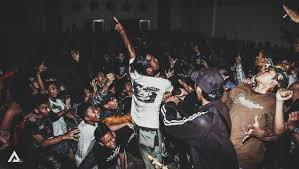
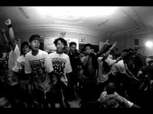
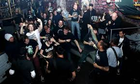

Malang City Underground
Kota Malang
-
Malang adalah sebuah kota yang terletak di Provinsi Jawa Timur, Indonesia, kota terbesar kedua di Jawa Timur setelah Surabaya, dan kota terbesar ke-12 di Indonesia. Kota ini didirikan pada masa Kerajaan Kanjuruhan dan terletak di dataran tinggi seluas 145,28 km2 yang terletak di tengah-tengah Kabupaten Malang. Bersama dengan Kota Batu dan Kabupaten Malang, Kota Malang merupakan bagian dari kesatuan wilayah yang dikenal dengan Malang Raya.
Malang juga terkenal dengan penduduknya yang cukup terbuka dengan musik. Berikut saya akan menjelaskan jenis-jenis musik lokal malang yang cukup populer
di Kota Malang
Hardcore
Hardcore di kota Malang cukup terkenal dan digemari oleh anak-anak muda, aliran hardcore cenderung keras dan memiliki arti disetiap lirik lirik lagunya.Tipikal musik Hardcore ini biasanya mengandalkan distorsi gitar dengan sound tebal dan berat,tempo lebih cepat dari musik punk.Sedang untuk liriknya biasa bertema sosial,kebebasan berpendapat,perang dan pergerakan dan scene Hardcore itu sendiri. Arti lain dari hardcore adalah merupakan suatu bentuk ekspresi yang di keluarkan dalam bentuk gaya hidup dengan pemikiran kedepan & perhatian mereka terhadap lingkungan hidup.
Kelud Angeles
tak kalah dari hardcore, Kelud Angeles juga banyak digemari oleh pemuda-pemuda di kota Malang, Kelud Angeles bergenre hip-hop dan musiknya cukup santai
Metal
Musik Metal merupakan aliran musik rock dengan nada dan iramanya yang dapat memunculkan semangat dari para pendengarnya. Musik ini identik dengan suara gemuruh dari drum solonya, ketukan cepat, distorsi gitar yang kuat, dan aliran gitar yang rapi serta enak didengar. Pada umumnya, lirik musik metal ini berkaitan dengan maskulinitas dan kejantanan. Maka tak jarang kaum laki-laki banyak yang mendengarkan jenis musik ini.
Punk
"Punk Rock" adalah salah satu cabang genre dari musik Rock yang juga cukup populer di Malang, musik punk rock ini muncul pada era 1970'an dengan munculnya band seperti The Clash, Sex Pistols. Kelompok punk sering meniru struktur musik sederhana seperti musik garage rock dari tahun 1960-an. Biasanya mereka terdiri dari satu drum kit, satu atau dua electric guitar, satu electric bass, dan vocals. Drums biasanya hanya memiliki satu snare drum, satu tom, satu floor tom, satu bass drum, hi-hats, satu atau dua crash cymbal dan satu ride cymbal.